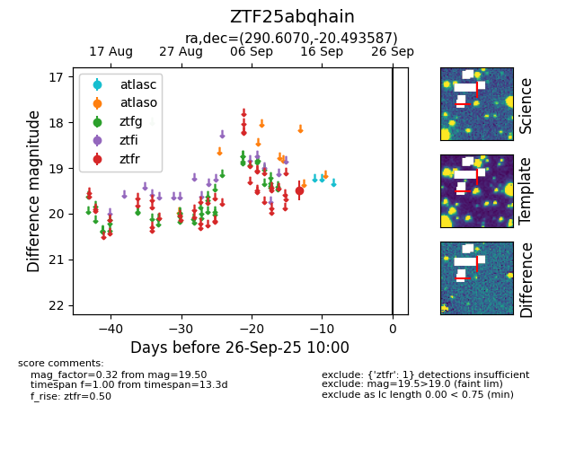

FINK: ZTF25abqhain
Lasair: ZTF25abqhain
ALeRCE: ZTF25abqhain
ZTF25abqhain (ztf,fink)
equatorial (ra, dec) = (290.6070,-20.49359)
galactic (l, b) = (17.6267,-15.78483)

last ztfr=19.50
1 ztfr detections